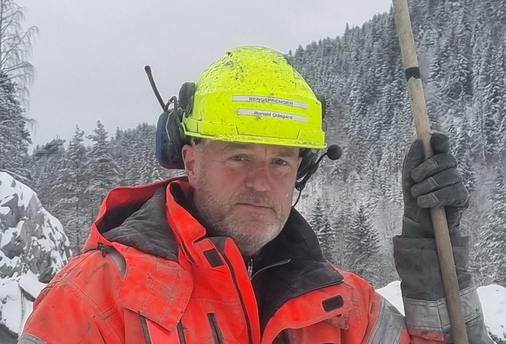

transport
Om oss
Agroservice AS holder til i Norge.
Agroservice AS holder til i Norge og tar oppdrag innen siste innlegg, arkiv, kategorier og profil.
Agroservice AS – Graving, sprengning, transport og skogsdrift + Nesmoen 48 N-3540 Nesbyen Org.nr 918 685 162 Tlf +47 959 41 121 Mer kontaktinfo...
Siste innlegg Ole Håkon Storeli Svein Olav Venedokken Maskintransport Topas renseanlegg Ronald Ødegård Arkiv mars 2020 februar 2020 april 2019 februar 2019 januar 2019 desember 2018 august 2018 juni 2018 mai 2018 desember 2017 november 2017 mai 2017 april 2016 mars 2016 desember 2015 juli 2014 juni 2014 mai 2014 Kategorier Ansatte Brøyting Fjellsprengning Graving Høy for salg Renseanlegg og avløpsløsninger Skogsdrift Transport ☰ MENY Tjenester Graving Fjellsprengning Transport Skogsdrift Renseanlegg og avløpsløsninger Brøyting Høy for salg Profil Om oss Ansatte Historie Video Kontakt Kontaktinfo E-post Agroservice AS Agroservice er et entreprenørfirma med sentral godkjenning lokalisert i Nesbyen i Hallingdal.
Våre hovednæringer er innen graving, sprengning, transport og skogsdrift.
«Sporingen kunden slår opp selv»

Vil du vite mer?
Vi svarer på det du lurer på, uten bindende avtale.
Ta kontakt